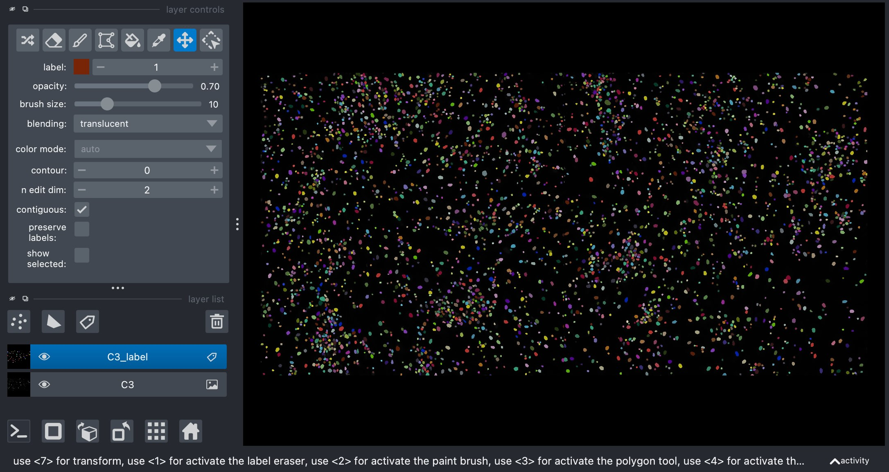

import operetta_compose as oc
import napari
import napari_ome_zarr_navigator
from pathlib import PathView OME-ZARR plates in Napari
This tutorial demonstrates how to load data generated with Fractal into Napari using operetta-compose and the ome-zarr-navigator
def add_well(zarr_root: str, row: str, col: str, viewer: napari.viewer.Viewer):
"""Add a well with labels to the napari viewer
Args:
zarr_root: the base URL of the OME-ZARR
row: the row of the plate to load
col: the column of the plate to load
viewer: an instance of a napari Viewer
"""
zarr_url = str(Path(f"{zarr_root}/{row}/{col}/0").resolve())
roi_url, roi_idx = oc.io.get_roi(zarr_url, "well_ROI_table", level=0)
img = oc.io.load_intensity_roi(roi_url, roi_idx)
labels = oc.io.load_label_roi(roi_url, roi_idx)
viewer.add_image(img, name=f"{row}{col}")
label_layer = viewer.add_labels(labels, name=f"{row}{col}_label")
napari_ome_zarr_navigator.util.add_features_to_labels(zarr_url, label_layer)Start a Napari Viewer and load a predefined well from the OME-Zarr
viewer = napari.Viewer()row = "C"
col = "3"
zarr_root = "../../operetta-compose/tests/test_output/operetta_plate.zarr"add_well(zarr_root, row, col, viewer)
Utilities
Inspect the classifier
import pickle
with open("../../operetta-compose/tests/classifier.pkl", "rb") as clf_file:
classifier = pickle.load(clf_file)Inspect predictions in the regionprops table
import anndata as ad
ad.read_zarr(f"{zarr_root}/{row}/{col}/0/tables/regionprops").obs| roi_id | label | prediction | |
|---|---|---|---|
| 0 | C3 | 1 | 2 |
| 1 | C3 | 2 | 2 |
| 2 | C3 | 3 | 1 |
| 3 | C3 | 4 | 2 |
| 4 | C3 | 5 | 1 |
| ... | ... | ... | ... |
| 3630 | C3 | 3631 | 1 |
| 3631 | C3 | 3632 | 2 |
| 3632 | C3 | 3633 | 2 |
| 3633 | C3 | 3634 | 1 |
| 3634 | C3 | 3635 | 1 |
3635 rows × 3 columns